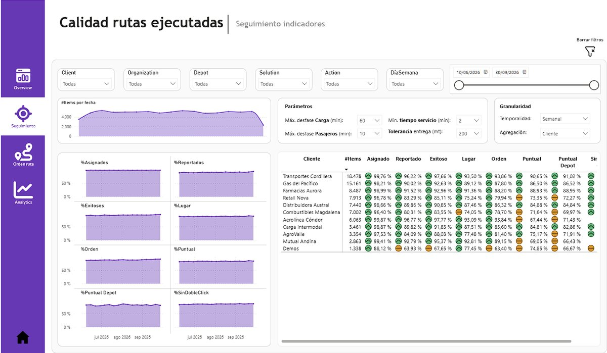

Calidad de ejecución de rutas
Una entrega es "perfecta" cuando se asigna, se reporta, se hace en el lugar correcto, a tiempo y en el orden planificado. Este dashboard mide cada una de esas etapas para empresas de carga y de transporte de pasajeros, y muestra cada semana en qué paso se pierde calidad.

Abrir informe interactivo ↗Problema
Los clientes evaluaban el servicio por la calidad de sus entregas, pero cada área la medía distinto y nadie veía la cadena completa, desde la asignación hasta la llegada a tiempo.
Solución
Una definición común de entrega perfecta en siete indicadores encadenados, con umbrales ajustables por el usuario y un reporte semanal por cliente y centro de distribución.
Decisiones que permite
- Identificar en qué etapa se pierde calidad: asignación, reporte, lugar, orden o puntualidad.
- Priorizar los clientes y centros de distribución con peor desempeño.
- Detectar reportes hechos sin estar en el punto de entrega.
- Medir el efecto de cambiar la tolerancia de puntualidad o distancia.
- Preparar las reuniones con clientes con evidencia semana a semana.
Resultado
El equipo lo usaba todos los días para seguir la calidad de ejecución por cliente y centro de distribución, y detectar a tiempo en qué etapa se perdía calidad.
Stack
Power BI · DAX · SQL (PostgreSQL) · Power Query · Parámetros What-if
Cómo se construyó
- Fuente: consultas SQL sobre PostgreSQL que toman el último evento de cada parada con una función de ventana y agregan las paradas en la base de datos, agrupando distancias en tramos de 100 m y atrasos en tramos de 5 minutos.
- Limpieza en Power Query: se corrigen fechas planificadas inválidas, se acotan valores extremos y se unen las fuentes de dos plataformas distintas.
- Indicadores en cadena: asignados, reportados, exitosos, en orden, en lugar, puntuales y "sin doble clic", que detecta reportes hechos en segundos, sin estar realmente en el punto.
- Umbrales What-if: el usuario ajusta la tolerancia de puntualidad para carga y para pasajeros, la distancia aceptada y el tiempo mínimo de servicio, y todos los indicadores se recalculan.
- Reporte semanal: semáforo por indicador, variación contra las dos semanas anteriores y evolución de los puntos planificados por cliente.
DAX destacado
Cálculo de puntualidad utilizando umbrales diferenciados por tipo de servicio y validación de distancia al punto de atención.
Ver medida DAX →
TotalPuntuales =
VAR MinCarga = [Valor de PuntualidadCarga]
VAR MinPasajeros = [Valor de PuntualidadPasajeros]
VAR Distancia = [Valor de Distancias]
RETURN
CALCULATE (
SUM ( EntregaPerfecta[traslado_reportado] ),
EntregaPerfecta[item_type] IN { "STOP", "EXTRA_STOP" },
EntregaPerfecta[ruta_iniciada] = 1,
FILTER (
EntregaPerfecta,
NOT ISBLANK ( EntregaPerfecta[delta_minutos] )
&& ( EntregaPerfecta[metros_arribo] <= Distancia
|| EntregaPerfecta[metros_reporte] <= Distancia )
&& IF ( EntregaPerfecta[servicio] = "Carga",
EntregaPerfecta[delta_minutos] <= MinCarga,
EntregaPerfecta[delta_minutos] <= MinPasajeros )
)
)Por confidencialidad, los clientes, centros de distribución, personas y cifras de este caso son ficticios.